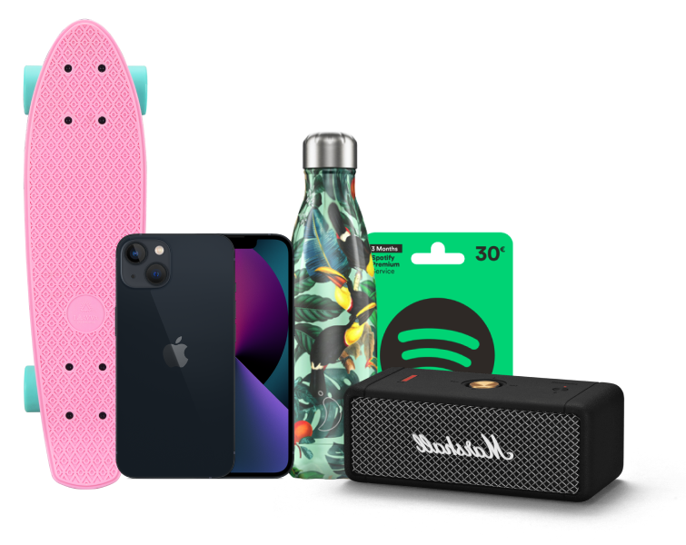

Teste ta culture générale et tente de gagner des cadeaux grâce au quiz de Médiamétrie.

Chaque question possède un niveau & un nombre de points. Plus tu trouves de bonnes réponses, plus tu gagnes de points !